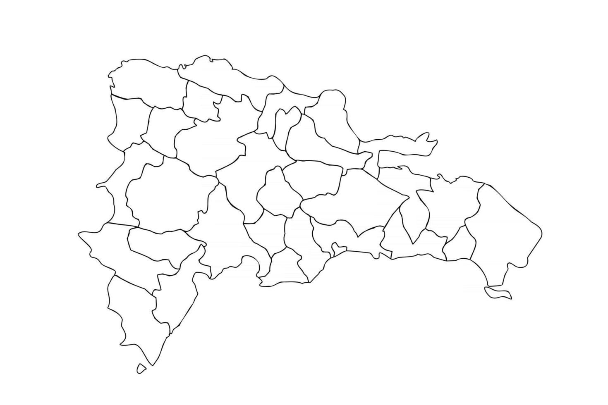

<body style="font-family:Times New Roman">
<h1 style="color:#0645AD;">La República Dominicana!</h1>
<p style="color:#414852;">En la República Dominicana hay un total de 31 provincias y un Distrito Nacional, 157 municipios y 234 distritos municipales (datos de 2019).</p>



<app-downbutton></app-downbutton>
<a name="bottomm" id="bottomm"></a>

<ol type="1">
  <li>Azua
    <ul>
      <li><a href="https://en.wikipedia.org/wiki/Azua_Province">Azua de Compostela</a></li>
      <li><a href="https://en.wikipedia.org/wiki/Esteban%C3%ADa">Estebanía</a></li>
      <li><a href="https://en.wikipedia.org/wiki/Guayabal,_Azua">Guayabal</a></li>
      <li><a href="https://en.wikipedia.org/wiki/Las_Charcas">Las Charcas</a></li>
      <li><a href="https://en.wikipedia.org/wiki/Las_Yayas_de_Viajama">Las Yayas de Viajama</a></li>
      <li><a href="https://en.wikipedia.org/wiki/Padre_Las_Casas,_Dominican_Republic">Padre Las Casas</a></li>
      <li><a href="https://en.wikipedia.org/wiki/Peralta,_Azua">Peralta</a></li>
      <li><a href="https://en.wikipedia.org/wiki/Pueblo_Viejo,_Dominican_Republic">Pueblo Viejo</a></li>
      <li><a href="https://en.wikipedia.org/wiki/Sabana_Yegua">Sabana Yegua</a></li>
      <li><a href="https://en.wikipedia.org/wiki/T%C3%A1bara_Arriba">Tábara Arriba</a></li>
    </ul>
  </li>
  <li><a href="https://en.wikipedia.org/wiki/Baoruco_Province">Baoruco</a>
    <ul>
      <li><a href="https://en.wikipedia.org/wiki/Neiba">Neiba</a></li>
      <li><a href="https://en.wikipedia.org/wiki/Galv%C3%A1n,_Dominican_Republic">Galván</a></li>
      <li><a href="https://en.wikipedia.org/wiki/Los_R%C3%ADos,_Dominican_Republic">Los Ríos</a></li>
      <li><a href="https://en.wikipedia.org/wiki/Tamayo,_Dominican_Republic">Tamayo</a></li>
      <li><a href="https://en.wikipedia.org/wiki/Villa_Jaragua">Villa Jaragua</a></li>
    </ul>
  </li>
  <li><a href="https://en.wikipedia.org/wiki/Barahona_Province">Barahona</a>
    <ul>
      <li><a href="https://en.wikipedia.org/wiki/Barahona,_Dominican_Republic">Barahona</a></li>
      <li><a href="https://en.wikipedia.org/wiki/Cabral,_Barahona">Cabral</a></li>
      <li><a href="https://en.wikipedia.org/wiki/El_Pe%C3%B1%C3%B3n,_Barahona">El Peñón</a></li>
      <li><a href="https://en.wikipedia.org/wiki/Enriquillo,_Barahona">Enriquillo</a></li>
      <li><a href="https://en.wikipedia.org/wiki/Fundaci%C3%B3n,_Barahona">Fundación</a></li>
      <li><a href="https://en.wikipedia.org/wiki/Jaquimeyes">Jaquimeyes</a></li>
      <li><a href="https://en.wikipedia.org/wiki/La_Ci%C3%A9naga,_Barahona">La Ciénaga</a></li>
      <li><a href="https://en.wikipedia.org/wiki/Las_Salinas">Las Salinas</a></li>
      <li><a href="https://en.wikipedia.org/wiki/Paraiso,_Barahona">Paraíso</a></li>
      <li><a href="https://en.wikipedia.org/wiki/Polo,_Barahona">Polo</a></li>
      <li><a href="https://en.wikipedia.org/wiki/Vicente_Noble">Vicente Noble</a></li>
    </ul>
  </li>
  <li><a href="https://en.wikipedia.org/wiki/Dajab%C3%B3n_Province">Dajabón</a>
    <ul>
      <li><a href="https://en.wikipedia.org/wiki/Dajab%C3%B3n">Dajabón</a></li>
      <li><a href="https://en.wikipedia.org/wiki/El_Pino_(Dominican_Republic)">El Pino</a></li>
      <li><a href="https://en.wikipedia.org/wiki/Loma_de_Cabrera">Loma de Cabrera</a></li>
      <li><a href="https://en.wikipedia.org/wiki/Partido,_Dominican_Republic">Partido</a></li>
      <li><a href="https://en.wikipedia.org/wiki/Restauraci%C3%B3n">Restauración</a></li>
    </ul>
  </li>
  <li><a href="https://en.wikipedia.org/wiki/Duarte_Province">Duarte</a>
    <ul>
      <li><a href="https://en.wikipedia.org/wiki/Arenoso">Arenoso</a></li>
      <li><a href="https://en.wikipedia.org/wiki/Castillo_(Duarte)">Castillo</a></li>
      <li><a href="https://en.wikipedia.org/wiki/Eugenio_Mar%C3%ADa_de_Hostos_(Duarte)">Eugenio María de Hostos</a></li>
      <li><a href="https://en.wikipedia.org/wiki/Las_Gu%C3%A1ranas">Las Guáranas</a></li>
      <li><a href="https://en.wikipedia.org/wiki/Pimentel,_Dominican_Republic">Pimentel</a></li>
      <li><a href="https://en.wikipedia.org/wiki/Villa_Riva">Villa Riva</a></li>
    </ul>
  </li>
  <li><a href="https://en.wikipedia.org/wiki/El_Seibo_Province">El Seibo</a>
    <ul>
      <li><a href="https://en.wikipedia.org/wiki/El_Seibo,_Dominican_Republic">El Seibo</a></li>
      <li><a href="https://en.wikipedia.org/wiki/Miches">Miches</a></li>
    </ul>
  </li>
  <li><a href="https://en.wikipedia.org/wiki/El%C3%ADas_Pi%C3%B1a_Province">Elías Piña</a>
    <ul>
      <li><a href="https://en.wikipedia.org/wiki/Comendador,_El%C3%ADas_Pi%C3%B1a">Comendador</a></li>
      <li><a href="https://en.wikipedia.org/wiki/San_Francisco_de_B%C3%A1nica">Bánica</a></li>
      <li><a href="https://en.wikipedia.org/wiki/El_Llano,_El%C3%ADas_Pi%C3%B1a">El Llano</a></li>
      <li><a href="https://en.wikipedia.org/wiki/Hondo_Valle,_El%C3%ADas_Pi%C3%B1a">Hondo Valle</a></li>
      <li><a href="https://en.wikipedia.org/wiki/Juan_Santiago,_El%C3%ADas_Pi%C3%B1a">Juan Santiago</a></li>
    </ul>
  </li>
  <li><a href="https://en.wikipedia.org/wiki/Espaillat_Province">Espaillat</a>
    <ul>
      <li><a href="https://en.wikipedia.org/wiki/Moca,_Dominican_Republic">Moca</a></li>
      <li><a href="https://en.wikipedia.org/wiki/Cayetano_Germos%C3%A9n">Cayetano Germosén</a></li>
      <li><a href="https://en.wikipedia.org/wiki/Gaspar_Hern%C3%A1ndez">Gaspar Hernández</a></li>
      <li><a href="https://en.wikipedia.org/wiki/Jamao_al_Norte">Jamao al Norte</a></li>
    </ul>
  </li>
  <li><a href="https://en.wikipedia.org/wiki/Hato_Mayor_Province">Hato Mayor</a>
    <ul>
      <li><a href="https://en.wikipedia.org/wiki/Hato_Mayor_del_Rey">Hato Mayor del Rey</a></li>
      <li><a href="https://en.wikipedia.org/wiki/El_Valle,_Hato_Mayor">El Valle</a></li>
      <li><a href="https://en.wikipedia.org/wiki/Sabana_de_la_Mar">Sabana de la Mar</a></li>
    </ul>
  </li>
  <li><a href="https://en.wikipedia.org/wiki/Hermanas_Mirabal_Province">Hermanas Mirabal</a>
    <ul>
      <li><a href="https://en.wikipedia.org/wiki/Salcedo,_Hermanas_Mirabal">Salcedo</a></li>
      <li><a href="https://en.wikipedia.org/wiki/Tenares">Tenares</a></li>
      <li><a href="https://en.wikipedia.org/wiki/Villa_Tapia">Villa Tapia</a></li>
    </ul>
  </li>
  <li><a href="https://en.wikipedia.org/wiki/Independencia_Province">Independencia</a>
    <ul>
      <li><a href="https://en.wikipedia.org/wiki/Jiman%C3%AD">Jimaní</a></li>
      <li><a href="https://en.wikipedia.org/wiki/Crist%C3%B3bal,_Independencia">Cristóbal</a></li>
      <li><a href="https://en.wikipedia.org/wiki/Duverg%C3%A9">Duvergé</a></li>
      <li><a href="https://en.wikipedia.org/wiki/La_Descubierta">La Descubierta</a></li>
      <li><a href="https://en.wikipedia.org/wiki/Mella,_Independencia">Mella</a></li>
      <li><a href="https://en.wikipedia.org/wiki/Postrer_R%C3%ADo">Postrer Río</a></li>
    </ul>
  </li>
  <li><a href="https://en.wikipedia.org/wiki/La_Altagracia_Province">La Altagracia</a>
    <ul>
      <li><a href="https://en.wikipedia.org/wiki/Hig%C3%BCey,_Dominican_Republic">Higüey</a> </li>
      <li><a href="https://en.wikipedia.org/wiki/San_Rafael_del_Yuma">San Rafael del Yuma</a></li>
    </ul>
  </li>
  <li><a href="https://en.wikipedia.org/wiki/La_Romana_Province,_Dominican_Republic">La Romana</a>
    <ul>
      <li><a href="https://en.wikipedia.org/wiki/La_Romana,_Dominican_Republic">La Romana</a></li>
      <li><a href="https://en.wikipedia.org/wiki/Guaymate">Guaymate</a></li>
      <li><a href="https://en.wikipedia.org/wiki/Villa_Hermosa">Villa Hermosa</a></li>
    </ul>
  </li>
  <li><a href="https://en.wikipedia.org/wiki/La_Vega_Province">La Vega</a>
    <ul>
      <li><a href="https://en.wikipedia.org/wiki/La_Vega_(city)">La Concepción de La Vega</a></li>
      <li><a href="https://en.wikipedia.org/wiki/Constanza,_Dominican_Republic">Constanza</a></li>]
      <li><a href="https://en.wikipedia.org/wiki/Jarabacoa">Jarabacoa</a></li>
      <li><a href="https://en.wikipedia.org/wiki/Jima_Abajo">Jima Abajo</a></li>
    </ul>
  </li>
  <li><a href="https://en.wikipedia.org/wiki/Mar%C3%ADa_Trinidad_S%C3%A1nchez_Province">María Trinidad Sánchez</a>
    <ul>
      <li><a href="https://en.wikipedia.org/wiki/Nagua">Nagua</a></li>
      <li><a href="https://en.wikipedia.org/wiki/Cabrera,_Mar%C3%ADa_Trinidad_S%C3%A1nchez">Cabrera</a></li>
      <li><a href="https://en.wikipedia.org/wiki/El_Factor">El Factor</a></li>
      <li><a href="https://en.wikipedia.org/wiki/R%C3%ADo_San_Juan,_Mar%C3%ADa_Trinidad_S%C3%A1nchez">Río San Juan</a></li>
    </ul>
  </li>
  <li><a href="https://en.wikipedia.org/wiki/Monse%C3%B1or_Nouel_Province">Monseñor Nouel</a>
    <ul>
      <li><a href="https://en.wikipedia.org/wiki/Bonao">Bonao</a></li>
      <li><a href="https://en.wikipedia.org/wiki/Maim%C3%B3n,_Monse%C3%B1or_Nouel">Maimón</a></li>
      <li><a href="https://en.wikipedia.org/wiki/Piedra_Blanca">Piedra Blanca</a></li>
    </ul>
  </li>
  <li><a href="https://en.wikipedia.org/wiki/Monte_Cristi_Province">Montecristi</a>
    <ul>
      <li><a href="https://en.wikipedia.org/wiki/Monte_Cristi,_Dominican_Republic">Montecristi</a></li>
      <li><a href="https://en.wikipedia.org/wiki/Casta%C3%B1uelas">Castañuelas</a></li>
      <li><a href="https://en.wikipedia.org/wiki/Guayub%C3%ADn">Guayubín</a></li>
      <li><a href="https://en.wikipedia.org/wiki/Las_Matas_de_Santa_Cruz">Las Matas de Santa Cruz</a></li>
      <li><a href="https://en.wikipedia.org/wiki/Pepillo_Salcedo,_Dominican_Republic">Pepillo Salcedo</a></li>
      <li><a href="https://en.wikipedia.org/wiki/Villa_V%C3%A1squez">Villa Vásquez</a></li>
    </ul>
  </li>
  <li><a href="https://en.wikipedia.org/wiki/Monte_Plata_Province">Monte Plata</a>
    <ul>
      <li><a href="https://en.wikipedia.org/wiki/Monte_Plata">Monte Plata</a></li>
      <li><a href="https://en.wikipedia.org/wiki/Bayaguana">Bayaguana</a></li>
      <li><a href="https://en.wikipedia.org/wiki/Peralvillo">Peralvillo</a></li>
      <li><a href="https://en.wikipedia.org/wiki/Sabana_Grande_de_Boy%C3%A1">Sabana Grande de Boyá</a></li>
      <li><a href="https://en.wikipedia.org/wiki/Yamas%C3%A1">Yamasá</a></li>
    </ul>
  </li>
  <li><a href="https://en.wikipedia.org/wiki/Pedernales_Province">Pedernales</a>
    <ul>
      <li><a href="https://en.wikipedia.org/wiki/Pedernales,_Dominican_Republic">Pedernales</a></li>
      <li><a href="https://en.wikipedia.org/wiki/Oviedo,_Pedernales">Oviedo</a></li>
    </ul>
  </li>
  <li><a href="https://en.wikipedia.org/wiki/Peravia_Province">Peravia</a>
    <ul>
      <li><a href="https://en.wikipedia.org/wiki/Ban%C3%AD">Baní</a></li>
      <li><a href="https://en.wikipedia.org/wiki/Nizao">Nizao</a></li>
    </ul>
  </li>
  <li><a href="https://en.wikipedia.org/wiki/Puerto_Plata_Province">Puerto Plata</a>
    <ul>
      <li><a href="https://en.wikipedia.org/wiki/Puerto_Plata,_Dominican_Republic">Puerto Plata</a></li>
      <li><a href="https://en.wikipedia.org/wiki/Guananico">Guananico</a></li>
      <li><a href="https://en.wikipedia.org/wiki/Imbert,_Puerto_Plata">Imbert</a></li>
      <li><a href="https://en.wikipedia.org/wiki/Los_Hidalgos">Los Hidalgos</a></li>
      <li><a href="https://en.wikipedia.org/wiki/Luper%C3%B3n_(locality)">Luperón</a></li>
      <li><a href="https://en.wikipedia.org/wiki/Sos%C3%BAa">Sosúa</a></li>
      <li><a href="https://en.wikipedia.org/wiki/Villa_Isabela">Villa Isabela</a></li>
      <li><a href="https://en.wikipedia.org/wiki/Villa_Montellano">Villa Montellano</a></li>
    </ul>
  </li>
  <li><a href="https://en.wikipedia.org/wiki/Saman%C3%A1_Province">Samaná</a>
    <ul>
      <li><a href="https://en.wikipedia.org/wiki/Saman%C3%A1_(town)">Samaná</a></li>
      <li><a href="https://en.wikipedia.org/wiki/Las_Terrenas">Las Terrenas</a></li>
      <li><a href="https://en.wikipedia.org/wiki/S%C3%A1nchez,_Saman%C3%A1">Sánchez</a></li>
    </ul>
  </li>
  <li><a href="https://en.wikipedia.org/wiki/San_Crist%C3%B3bal_Province">San Cristóbal</a>
    <ul>
      <li><a href="https://en.wikipedia.org/wiki/San_Crist%C3%B3bal,_Dominican_Republic">San Cristóbal</a></li>
      <li><a href="https://en.wikipedia.org/wiki/Bajos_de_Haina">Bajos de Haina</a></li>
      <li><a href="https://en.wikipedia.org/wiki/Cambita_Garabitos">Cambita Garabitos</a></li>
      <li><a href="https://en.wikipedia.org/wiki/Los_Cacaos">Los Cacaos</a></li>
      <li><a href="https://en.wikipedia.org/wiki/Sabana_Grande_de_Palenque">Sabana Grande de Palenque</a></li>
      <li><a href="https://en.wikipedia.org/wiki/San_Gregorio_de_Nigua">San Gregorio de Nigua</a></li>
      <li><a href="https://en.wikipedia.org/wiki/Villa_Altagracia">Villa Altagracia</a></li>
      <li><a href="https://en.wikipedia.org/wiki/Yaguate">Yaguate</a></li>
    </ul>
  </li>
  <li><a href="https://en.wikipedia.org/wiki/San_Jos%C3%A9_de_Ocoa_Province">San José de Ocoa</a>
    <ul>
      <li><a href="https://en.wikipedia.org/wiki/San_Jos%C3%A9_de_Ocoa">San José de Ocoa</a></li>
      <li><a href="https://en.wikipedia.org/wiki/Rancho_Arriba">Rancho Arriba</a></li>
      <li><a href="https://en.wikipedia.org/wiki/Sabana_Larga">Sabana Larga</a></li>
    </ul>
  </li>
  <li><a href="https://en.wikipedia.org/wiki/San_Juan_Province_(Dominican_Republic)">San Juan</a>
    <ul>
      <li><a href="https://en.wikipedia.org/wiki/San_Juan_de_la_Maguana">San Juan de la Maguana</a></li>
      <li><a href="https://en.wikipedia.org/wiki/Bohech%C3%ADo">Bohechío</a></li>
      <li><a href="https://en.wikipedia.org/wiki/Juan_de_Herrera,_Dominican_Republic">Juan de Herrera</a></li>
      <li><a href="https://en.wikipedia.org/wiki/Las_Matas_de_Farf%C3%A1n">Las Matas de Farfán</a></li>
      <li><a href="https://en.wikipedia.org/wiki/Vallejuelo">Vallejuelo</a></li>
    </ul>
  </li>
  <li><a href="https://en.wikipedia.org/wiki/San_Pedro_de_Macor%C3%ADs_Province">San Pedro de Macorís</a>
    <ul>
      <li><a href="https://en.wikipedia.org/wiki/San_Pedro_de_Macor%C3%ADs">San Pedro de Macorís</a></li>
      <li><a href="https://en.wikipedia.org/wiki/Consuelo,_San_Pedro_de_Macor%C3%ADs">Consuelo</a></li>
      <li><a href="https://en.wikipedia.org/wiki/Guayacanes,_San_Pedro_de_Macor%C3%ADs">Guayacanes</a></li>
      <li><a href="https://en.wikipedia.org/wiki/Quisqueya,_San_Pedro_de_Macor%C3%ADs">Quisqueya</a></li>
      <li><a href="https://en.wikipedia.org/wiki/Ram%C3%B3n_Santana,_San_Pedro_de_Macor%C3%ADs">Ramón Santana</a></li>
      <li><a href="https://en.wikipedia.org/wiki/San_Jos%C3%A9_de_los_Llanos">San José de Los Llanos</a></li>
    </ul>
  </li>
  <li><a href="https://en.wikipedia.org/wiki/S%C3%A1nchez_Ram%C3%ADrez_Province">Sánchez Ramírez</a>
    <ul>
      <li><a href="https://en.wikipedia.org/wiki/Cotu%C3%AD">Cotuí</a></li>
      <li><a href="https://en.wikipedia.org/wiki/Cevicos">Cevicos</a></li>
      <li><a href="https://en.wikipedia.org/wiki/Fantino,_Dominican_Republic">Fantino</a></li>
      <li><a href="https://en.wikipedia.org/wiki/La_Mata,_Dominican_Republic">La Mata</a></li>
    </ul>
  </li>
  <li><a href="https://en.wikipedia.org/wiki/Santiago_Province_(Dominican_Republic)">Santiago</a>
    <ul>
      <li><a href="https://en.wikipedia.org/wiki/Santiago_de_los_Caballeros">Santiago</a></li>
      <li><a href="https://en.wikipedia.org/wiki/Villa_Bison%C3%B3">Bisonó</a></li>
      <li><a href="https://en.wikipedia.org/wiki/J%C3%A1nico">Jánico</a></li>
      <li><a href="https://en.wikipedia.org/wiki/Licey_al_Medio">Licey al Medio</a></li>
      <li><a href="https://en.wikipedia.org/wiki/Pu%C3%B1al">Puñal</a></li>
      <li><a href="https://en.wikipedia.org/wiki/Sabana_Iglesia">Sabana Iglesia</a></li>
      <li><a href="https://en.wikipedia.org/wiki/San_Jos%C3%A9_de_las_Matas">San José de las Matas</a></li>
      <li><a href="https://en.wikipedia.org/wiki/Tamboril,_Dominican_Republic">Tamboril</a></li>
      <li><a href="https://en.wikipedia.org/wiki/Villa_Gonz%C3%A1lez">Villa González</a></li>
    </ul>
  </li>
  <li><a href="https://simple.wikipedia.org/wiki/Santiago_Rodr%C3%ADguez_Province">Santiago Rodríguez</a>
    <ul>
      <li><a href="https://simple.wikipedia.org/wiki/Sabaneta,_Santiago_Rodr%C3%ADguez">San Ignacio de Sabaneta</a></li>
      <li><a href="https://simple.wikipedia.org/wiki/Villa_Los_Alm%C3%A1cigos">Los Almácigos</a></li>
      <li><a href="https://simple.wikipedia.org/wiki/Monci%C3%B3n">Monción</a></li>
    </ul>
  </li>
  <li><a href="https://en.wikipedia.org/wiki/Santo_Domingo_Province">Santo Domingo</a>
    <ul>
      <li><a href="https://en.wikipedia.org/wiki/Santo_Domingo_Este">Santo Domingo Este</a></li>
      <li><a href="https://en.wikipedia.org/wiki/Boca_Chica">Boca Chica</a></li>
      <li><a href="https://en.wikipedia.org/wiki/Los_Alcarrizos">Los Alcarrizos</a></li>
      <li><a href="https://en.wikipedia.org/wiki/Pedro_Brand">Pedro Brand</a></li>
      <li><a href="https://en.wikipedia.org/wiki/San_Antonio_de_Guerra">San Antonio de Guerra</a></li>
      <li><a href="https://en.wikipedia.org/wiki/Santo_Domingo_Norte">Santo Domingo Norte</a></li>
      <li><a href="https://en.wikipedia.org/wiki/Santo_Domingo_Oeste">Santo Domingo Oeste</a></li>
    </ul>
  </li>
  <li><a href="https://en.wikipedia.org/wiki/Valverde_Province">Valverde</a>
    <ul>
      <li><a href="https://en.wikipedia.org/wiki/Santa_Cruz_de_Mao">Mao</a></li>
      <li><a href="https://en.wikipedia.org/wiki/Esperanza,_Dominican_Republic">Esperanza</a></li>
      <li><a href="https://en.wikipedia.org/wiki/Laguna_Salada">Laguna Salada</a></li>
    </ul>
  </li>
</ol>

<app-topbutton></app-topbutton>
<a name="bottom" id="bottom"></a>


</body>